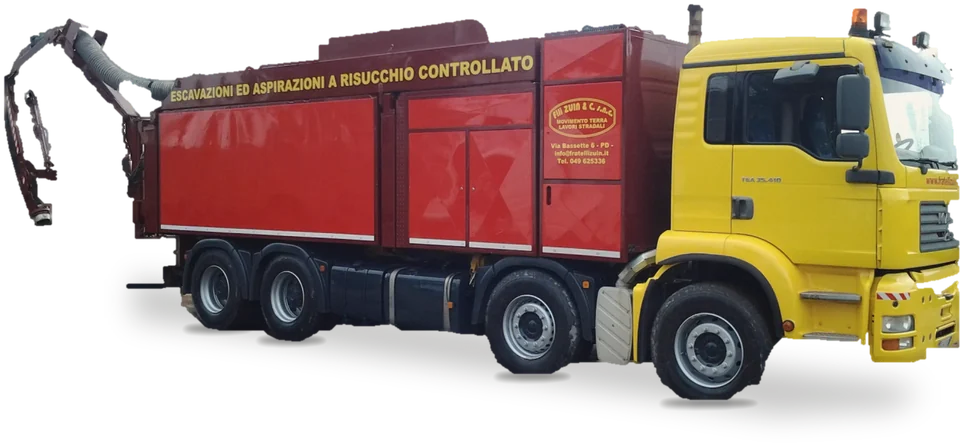
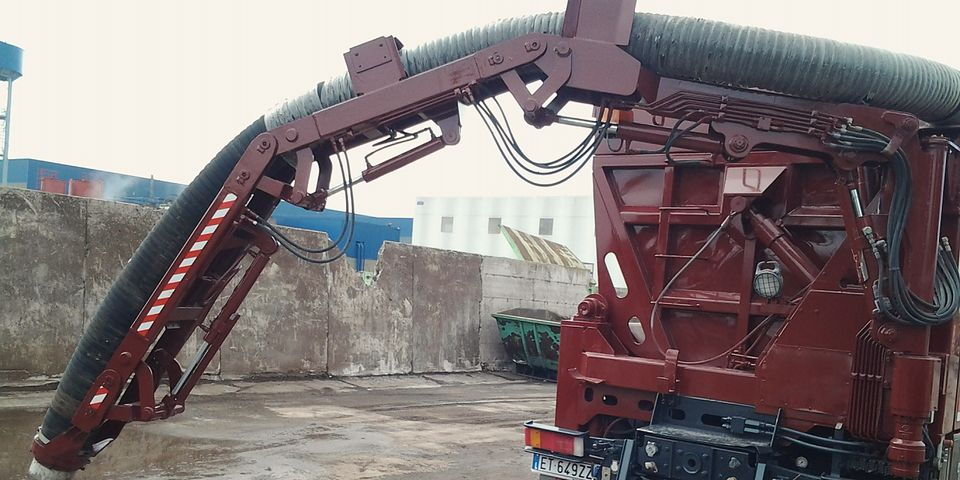
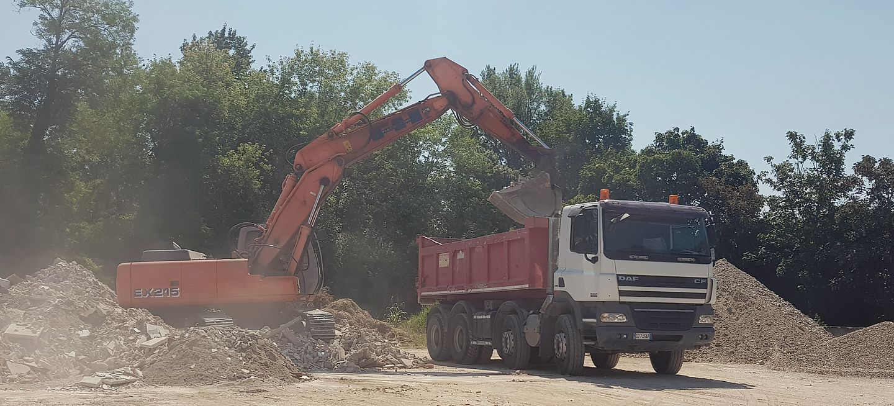

Escavazioni ed aspirazioni a risucchio controllato

Il nostro escavatore a risucchio, MAN TGA 35.410
Movimento terra, lavori stradali, demolizioni e aspirazioni industriali. Impresa di famiglia a Padova dal 1946.
Nove lavori, per enti pubblici e privati
Dalla rotatoria al cassone da 2 m³. Scegli un lavoro per vederlo.
- Demolizioni,
- urbanizzazioni,
- noleggio cassoni scarrabili da 2 a 25 m³,
- escavatori a risucchio industriali,
- formazione e sistemazione fognature,
- lavori stradali,
- movimento terra,
- ritiro del materiale da demolizioni e scavi,
- sistemazioni esterne anche di piccola entità.

Scavi controllati e aspirazione di qualsiasi materiale: liquido, secco, solido e polveri, anche in luoghi confinati.
Tre generazioni, dal cortile di casa
-
1946
I tre fratelli Zuin cominciano nel cortile di casa, trasportando materiale da costruzione con il loro primo autocarro, un DOGE. Presto arrivano altri autocarri ed escavatori; con gli anni entrano nella società anche i figli.
-
1968–69
La prima demolizione importante: l'ex Foro Boario di Padova. Poi la sede dell'Azienda del Gas in Via Trieste e la realizzazione di una parte dell'impianto di illuminazione del Prato della Valle.
-
Oggi
Escavatori cingolati, gommati e mini escavatori, scarrabili anche della larghezza di un'automobile e gli escavatori a risucchio. Per i lavori pubblici, l'impresa ha l'attestazione di qualificazione SOA.
Scarrabili della larghezza di un'automobile, in grado di intervenire in qualsiasi situazione e spazio
- 049 625336
- info@fratellizuin.it
- Via Bassette 6/A, 35129 Padova, vicino al casello di Padova Est
- Il preventivo è gratuito.
